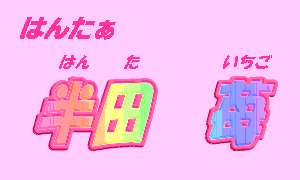

——華代ちゃんシリーズ・番外編——
（ハンター・シリーズ０５）
いちごちゃん・シリーズ０１
「いちごちゃん誕生！！」
※ 「華代ちゃん」シリーズの詳細については、以下の公式ページを参照にしてください。
http://www.geocities.co.jp/Playtown/7073/kayo_chan00.html
※ 「華代ちゃんシリーズ・番外編」の詳細については、http://www.geocities.co.jp/Playtown/7073/kayo_chan02.html を参照にしてください。
俺は「ハンター」だ。
不思議な能力で “依頼人” を性転換しまくる恐怖の存在、「真城 華代」の哀れな犠牲者を元に戻す仕事をしている。
最終的な目標は、「真城 華代」を無害化することにある。
とある事件——というか「華代被害」——に巻き込まれた今の俺は、１５〜６歳くらいの娘になってしまっている。
華代の後始末の傍ら、なんとか元に戻る手段も模索している。
さて、今回のミッションは……
彼女は大きなリュックを背負っていた。
自分の身体の体積ほどはありそうに見えるそのリュックを、よっこらしょ……とばかりにその場に下ろす。
「ふう……やっと見つけたぞ。手間かけさせやがって」
その声は張りがあり、爽やかに響いた。
長い髪を後ろで１つにしばっている。Tシャツにジーンズというカジュアルないでたちで、その健康的な魅力は見るものを魅了する。
「あ、いいから落ち着いて。そのまま、そのまま」
彼女の目の前には、ひとりの人物が座り込んでいた。
「ふん……チアリーダーの衣装か——」
その場にいたのは、日本では「チアガール」と呼ばれることの多い、原色のミニスカートに身を包んだ少女である。
「まあ、気持ちは分かるが……とりあえず脚を直せ」
“体育座り” 状態になっていたその少女は、スカートがまくれ上がり、下着が丸見えになっていた。
「ふん、ショックで口も聞けないか……無理も無い。大方、誰かを『応援したい』とか言ったらチアリーダーにされたんだろ？」
ピクッ——と肩を震わせ、少女が反応した。
「やっぱりそうか……相変わらず安易な奴だ。心配するな、クラスメートは全員元に戻しておいたぞ」
「お、お姉さんは…………一体……？」
“お姉さん” と呼ばれてどきりとする。
「いいからっ！ ……戻すぞっ」
彼女の掛け声とともに、見る見るうちに平凡な男子中学生へと変わって……いや、「戻って」いくチアリーダー。
「あ……あ…………」「——じゃ、そういうことで」
人間災害「真城 華代」の被害にあった対象者を
“還元” し、リュックをかつぎ直してそそくさとその場を去ろうとする。
何か嫌な思い出でもあるのだろうか……？
「……お、お姉さんっ」
その呼び方は止めろってのに……
ちょっぴり頬を赤くして振り返る。「何だよ……？」
「せ、せめて名前だけでも——」
名前——名前ねえ……まさか女性名を名乗るわけにも行かないし……
「名前は……あ〜名前は、その、は……『はんた・いちご』だ」
無茶苦茶に安易である。「ハンター、1号」をそのまま読んだだけだ。
自分でも恥ずかしくなったのか、何も話さずにリュック少女——いちごはその場から駆け出した……
少女は「本部」の廊下を歩きながら、何度も悪態をついていた。
くそっ、あのどアホ名刺屋め……。
その手には可愛らしいピンクの紙片が握られていた。
そこには「半田 苺」の文字がある。
誰がこんな可愛らしいフォントにしろと言った…………もう泣きたい気分だった。
「おい、１号」
「いちご」と呼ばれたと思い、彼女はビクッと身をすくめる。
「お前……まさかその格好でここまで歩いて来たのか？」
「へ？」
同僚の言葉にふと後ろを振り返ると……
「…………」
背中側に女性の下着であるスリップが、でろ〜んとはみ出していた。
「またあいつは引きこもってるのか？」

□ 感想はこちらに □